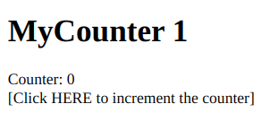
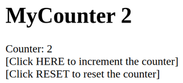
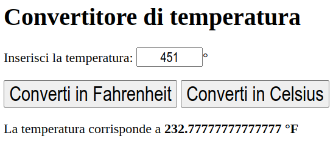
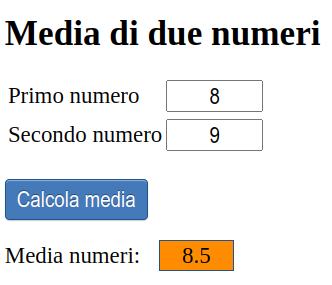
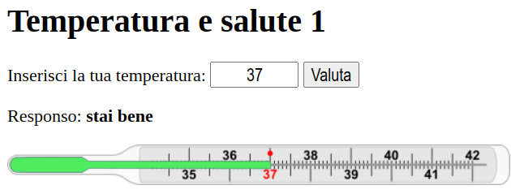
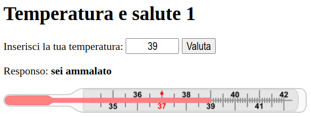
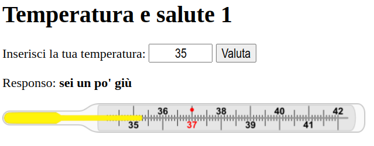
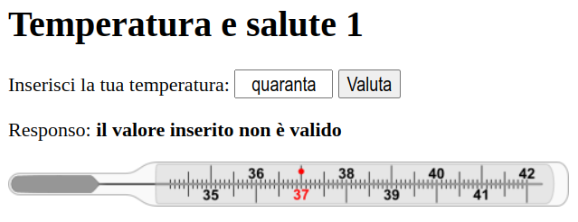
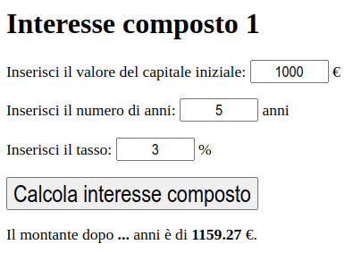

Appunti di laboratorio - elenco completo Contatto maurizio.boscaini@unitn.it
NOTA: questi appunti sono da intendersi solo come aiuto allo studio e alla preparazione all'esame.
La programmazione è difficile...ma è anche bella, utile e importante.
Si può imparare a programmare solo programmando.
Riferimenti
Possiamo fornire le seguenti definizioni operative:
Linguaggio = (Vocabolario, Sintassi, Semantica)
Vocabolario = {insieme delle parole valide/riconosciute del linguaggio}
Parola = sequenza finita di caratteri dell'alfabeto del linguaggio
Alfabeto = {isieme dei simboli utilizzati dal linguaggio}
Es. la parola "aaaaabaaaa" è una di simboli della lingua italiana ma non è una parola valida, ovvero non è riconosciuta dal linguaggio e non appartiene al vocabolario dell'italiano
Sintassi = {insieme di regole di costruzione delle frasi}
Semantica: attribuisce un significato/senso/valore alle parole e alle frasi.
Per es. la frase "Il cane scalcia la luna" è sintatticamente corretta, ma semanticamente non ha molto senso.
Il DOM (Document Object Model) è una rappresentazione strutturata di un documento HTML (o XML), che il browser crea automaticamente quando carica la pagina. È organizzato in una gerarchia ad albero dove ogni nodo rappresenta una parte del documento (elemento, attributo, testo, ecc.).
document.getElementById(), querySelector(), ecc.Per questo HTML:
<!DOCTYPE html>
<html>
<head>
<title>Pagina esempio</title>
</head>
<body>
<h1>Ciao!</h1>
<p>Questo è un paragrafo.</p>
</body>
</html>
Il DOM corrispondente sarà:
- document
└── html
├── head
│ └── title
│ └── "Pagina esempio"
└── body
├── h1
│ └── "Ciao!"
│
└── p
└── "Questo è un paragrafo."
Ogni nodo può essere manipolato, ad esempio per cambiare il testo dell'elemento via JavaScript:
document.querySelector("h1").textContent = "Benvenuto!";
La programmazione di una pagina web tramite JavaScript di base sulla scrittura di codice (funzioni) che vengono richiamate (eseguite) quando accadono determinati eventi (per esempio il clic su un elemento della pagina, oppure lo scadere di un timer)
Pagina web in cui cliccando su un elemento viene aggiornato un contatore utilizzando un incremento unitario.
Elementi HTML da applicare (oltre a quelli già visti in esercizi precedenti):
<script>
Crea la pagina HTML e il codice JavaScript con la seguente struttura e i seguenti file nel file system:
/MyCounter1
├── index.html

Modifica l'esercizio precedente, aggiungendo la possibilità di resettare il contatore.
Crea la pagina HTML e il codice JavaScript con la seguente struttura e i seguenti file nel file system:
/MyCounter2
├── index.html

Per includere un file JavaScript esterno si usa il seguente tag:
<script src="index.js"></script>
Crea un programma per la conversione da gradi Celsius a Fahrenheit e viceversa.
Crea la pagina HTML e il codice JavaScript con la seguente struttura e i seguenti file nel file system:
/ConversioneTemperature1
├── styles.css
├── index.html
├── index.js

Crea un programma per calcolare la media di due numeri inseriti dall'utente.
Crea la pagina HTML e il codice JavaScript con la seguente struttura e i seguenti file nel file system:
/Media1
├── styles.css
├── index.html
├── index.js

Crea un programma per dare un responso, testuale e grafico, di un valore di temperatura di un essere umano.
Funzioni/metodi da applicare:
document.querySelector(<selettore CSS>).setAttribute(<nome attributo>, <valore attributo>);
Crea la pagina HTML e il codice JavaScript con la seguente struttura e i seguenti file nel file system:
/TemperaturaSalute1
├── styles.css
├── index.html
├── index.js

Crea un programma per il calcolo dell'interesse composto (https://it.wikipedia.org/wiki/Interesse_(matematica_finanziaria)).
Crea la pagina HTML e il codice JavaScript con la seguente struttura e i seguenti file nel file system:
/InteresseComposto1
├── css/
└── styles.css
├── js/
└── index.js
├── index.html
